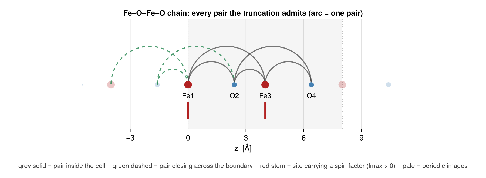
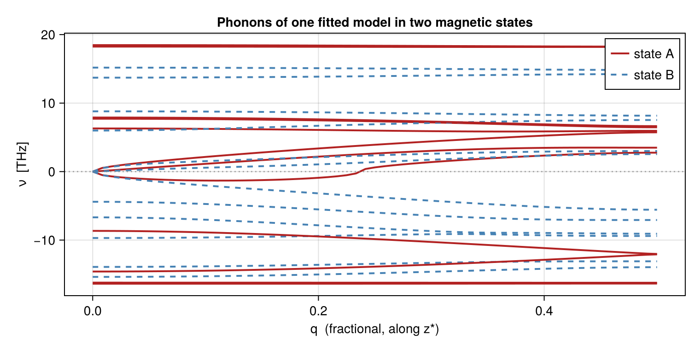

Force constants and phonons
A joint model's displacement channel is a lattice-dynamics model, and this page is how you read it out: force_constants for the real-space constants, dynamical_matrix for D(q), and write_phonopy / write_alamode to hand the result to the established phonon codes. Everything here is a derivative of the same fitted energy surface the spin channel comes from — see Reading a fitted model for the term-level view and Strain, magnetoelasticity and volume grids for the cell-deformation half.
The model on this page
A one-dimensional superexchange chain: two Fe sites per cell with a bridging O, the Fe–O spacings deliberately unequal. It is the smallest structure that is a crystal rather than a molecule in a box for the purposes of this page — its couplings reach across the cell boundary, which is what makes $D(\boldsymbol q)$ depend on $\boldsymbol q$ at all — and its ligand is what lets the spin pair be dressed by a displacement that is not its own (see Building the basis; the ligand species carries lmax = 0, i.e. no spin factor, and pmax > 0, i.e. it still moves).
Three sectors: the pure-spin pair, the same pair dressed by a displacement on either end or on the ligand, and the spin-free displacement pairs that carry the force constants. Two fits of the same synthetic data, one unconstrained and one under the acoustic sum rule, because the contrast between them is the physics of this page:
using SLCE, LinearAlgebra, Random
import Spglib # activates the real space-group backend
nat = 4
cr = Crystal(Lattice([5.0 0 0; 0 5.0 0; 0 0 8.0]),
[0.0 0.0 0.0 0.0; 0.0 0.0 0.0 0.0; 0.0 0.3 0.5 0.8],
[1, 2, 1, 2], ["Fe", "O"])
spec = BasisSpec(cr; lmax = ["*" => 1, "O" => 0], pmax = 2, sectors = [
Sector(spin = (sites = 1:2,), cutoff = 4.2), # pure spin
Sector(spin = [1, 1], disp = (degree = 2,), sites = 2:3, cutoff = 4.2), # coupled, ligand allowed
Sector(disp = (degree = 2,), sites = 1:2, cutoff = 4.2)]) # force constants
basis = SLCEBasis(cr, spec; backend = SpglibBackend())
println("space group ", basis.spacegroup.symbol, " (", SLCE.n_ops(basis.spacegroup),
" operations), ", n_salcs(basis), " SALCs")
truth = SLCEModel(basis, 0.0, randn(MersenneTwister(1), n_salcs(basis)))
prov = DatumProvenance(; reference_id = "ref", reference_fingerprint = crystal_fingerprint(cr))
rng = MersenneTwister(7)
randcfg() = reduce(hcat, [normalize(randn(rng, 3)) for _ = 1:nat])
data = map(1:300) do _
e = randcfg()
u = 0.08 .* randn(rng, 3, nat)
TrainingDatum(; energy = predict_energy(truth, e, u), directions = e,
magmoms = ones(nat), displacements = u, provenance = prov)
end
jds = SLCEDataset(basis, data; use_torque = false, use_force = false)
joint = SLCEModel(fit(SLCEFit, jds, OLS(); asr = false)) # deliberately unconstrainedspace group P4mm (16 operations), 71 SALCs
┌ Warning: after dropping the tied orbits, 10 flat direction(s) remain in the structural expansion: some coefficient combination is still undetermined on this cell. Run `identifiability` on the fit and treat q ≠ 0 readouts as unconstrained
└ @ SLCE ~/work/SLCE.jl/SLCE.jl/src/fitting/asr.jl:450
┌ Warning: OLS design matrix is rank deficient or severely ill-conditioned: only 61 of 71 columns are independent at a 1e-10 diagonal threshold (κ ≳ 1e10). The least-squares solution is non-unique or unstable, so the returned coefficients (and anything read off them — coeftable, decorated_terms, force_constants, bilinear_terms) are one arbitrary representative; predicted energies are still well-defined. Causes: a redundancy the resolvability classification could not certify (an AllImages basis fitted with asr = false), or too few / degenerate training configurations. Consider Ridge(lambda > 0), more data, or a smaller basis.
└ @ SLCE ~/work/SLCE.jl/SLCE.jl/src/fitting/estimators.jl:418The structure, drawn from the object that was built
The figure comes straight from cr and the neighbor list basis was assembled with, so it cannot drift from what is computed. Sites are cartesian_positions; the bars are the admitted pairs — the ones the cluster enumeration accepted at their minimum image — and the shaded strip is the cell that repeats.
using CairoMakie
CairoMakie.activate!(type = "png")
z = cartesian_positions(cr)[3, :]
c = cr.lattice.vectors[3, 3]
nl = SLCE.build_neighbor_list(cr, 4.2, MinimumImage())
isFe = cr.species .== 1
arc(x1, x2) = (t = range(0, π; length = 80); # semicircle x1 → x2
((x1 + x2) / 2 .+ abs(x2 - x1) / 2 .* cos.(t), abs(x2 - x1) / 2 .* sin.(t)))
fig = Figure(size = (900, 330))
ax = Axis(fig[1, 1]; aspect = DataAspect(), xlabel = "z [Å]",
title = "Fe–O–Fe–O chain: every pair the truncation admits (arc = one pair)")
hideydecorations!(ax); hidespines!(ax, :l, :r, :t)
vspan!(ax, 0, c; color = (:gray, 0.08))
vlines!(ax, [0, c]; color = (:gray, 0.5), linestyle = :dot)
for rep in (-1, 1), a = 1:nat # periodic images, ghosted
scatter!(ax, [z[a] + rep * c], [0.0]; markersize = isFe[a] ? 20 : 13,
color = isFe[a] ? (:firebrick, 0.25) : (:steelblue, 0.25))
end
for p in nl.pairs # one arc per admitted pair
p.i <= p.j || continue
xs, ys = arc(z[p.i], z[p.j] + p.shift[3] * c)
wrapped = p.shift[3] != 0
lines!(ax, xs, ys; color = wrapped ? (:seagreen, 0.85) : (:gray25, 0.7),
linewidth = 2, linestyle = wrapped ? :dash : :solid)
end
scatter!(ax, z[isFe], zeros(count(isFe)); markersize = 20, color = :firebrick)
scatter!(ax, z[.!isFe], zeros(count(.!isFe)); markersize = 13, color = :steelblue)
for a = 1:nat # spin factor lives on Fe only
isFe[a] && lines!(ax, [z[a], z[a]], [-0.9, -1.8]; color = :firebrick, linewidth = 3)
text!(ax, z[a], -0.35; text = "$(cr.species_labels[cr.species[a]])$a",
align = (:center, :top), fontsize = 13)
end
Label(fig[2, 1], "grey solid = pair inside the cell green dashed = pair closing across " *
"the boundary red stem = site carrying a spin factor (lmax > 0) " *
"pale = periodic images"; fontsize = 12, color = :gray25, tellwidth = false)
ylims!(ax, -2.3, 3.4); xlims!(ax, -5.5, c + 3.2)
fig
The dashed arcs are the reason this page has a dispersion at all: those pairs put force constants at a nonzero lattice translation $\boldsymbol R$, and it is exactly the $\boldsymbol R \neq \boldsymbol 0$ blocks that carry the $\boldsymbol q$-dependence of $D(\boldsymbol q)$.
Real-space constants
force_constants differentiates the energy with respect to displacements at u = 0, with the spins held fixed — so the lattice dynamics you get out is the lattice dynamics of that magnetic state. The derivatives are exact, not finite differences: every displacement factor is a homogeneous polynomial, so the constants are read off its monomial coefficients.
spins = randcfg()
fcs = force_constants(joint; spins = spins, order = 2)
for ((atoms, shifts), Φ) in sort(collect(fcs.constants); by = k -> (k[1][1], k[1][2]))
println("Φ[(", atoms[1], ",0), (", atoms[2], ",", Tuple(shifts[2]), ")] ‖Φ‖ = ",
round(norm(Φ); sigdigits = 4))
endΦ[(1,0), (1,(0, 0, 0))] ‖Φ‖ = 48.18
Φ[(1,0), (2,(0, 0, 0))] ‖Φ‖ = 10.49
Φ[(1,0), (3,(0, 0, -1))] ‖Φ‖ = 6.64
Φ[(1,0), (3,(0, 0, 0))] ‖Φ‖ = 6.64
Φ[(1,0), (4,(0, 0, -1))] ‖Φ‖ = 16.15
Φ[(2,0), (1,(0, 0, 0))] ‖Φ‖ = 10.49
Φ[(2,0), (2,(0, 0, 0))] ‖Φ‖ = 47.62
Φ[(2,0), (3,(0, 0, 0))] ‖Φ‖ = 20.37
Φ[(2,0), (4,(0, 0, -1))] ‖Φ‖ = 5.381
Φ[(2,0), (4,(0, 0, 0))] ‖Φ‖ = 5.381
Φ[(3,0), (1,(0, 0, 0))] ‖Φ‖ = 6.64
Φ[(3,0), (1,(0, 0, 1))] ‖Φ‖ = 6.64
Φ[(3,0), (2,(0, 0, 0))] ‖Φ‖ = 20.37
Φ[(3,0), (3,(0, 0, 0))] ‖Φ‖ = 50.07
Φ[(3,0), (4,(0, 0, 0))] ‖Φ‖ = 9.795
Φ[(4,0), (1,(0, 0, 1))] ‖Φ‖ = 16.15
Φ[(4,0), (2,(0, 0, 0))] ‖Φ‖ = 5.381
Φ[(4,0), (2,(0, 0, 1))] ‖Φ‖ = 5.381
Φ[(4,0), (3,(0, 0, 0))] ‖Φ‖ = 9.795
Φ[(4,0), (4,(0, 0, 0))] ‖Φ‖ = 49.79Indices follow the lattice-dynamics convention Φ[(a,0),(b,R)] = ∂²E/∂uₐ(0)∂u_b(R), anchored so the first index is in the home cell. The reverse ordering is a separate key, equal to the transpose.
The cluster enumeration admits a pair only between two distinct atoms of the reference cell (at their minimum-image separation — which reaches the Wigner–Seitz corner, so a cutoff cap is not what limits it). An atom paired with its own periodic image is never admitted, so Φ[(a,0),(a,R≠0)] is absent from this list by construction, and the $q$-dependence it would carry is absent from D(q). For the fit that costs nothing — a datum's displacement field is cell-periodic, so both ends of such a pair move together and the columns are dependent anyway — but for the read-out it means a same-sublattice force constant exists only if the two atoms are separate atoms of the cell you built the basis on. A one-atom cell therefore carries no pair content at all; build_asr warns that there is no translation-invariant displacement content, and D(q) ≡ 0. Describe the crystal with a large enough cell (the same reason a force-constant fit wants ≥ 3 periods along each fitted direction) and the same bonds appear as ordinary distinct-atom pairs. Full statement in Periodic resolvability; write_phonopy / write_alamode export whatever this list holds, without a warning of their own.
The pair above is missing from the enumeration. A different thing can happen to a pair that is enumerated: when its minimum image is not unique, several members of one orbit join the same two reference-cell atoms, and the content odd under permuting them cancels in the orbit sum. That SALC is then identically zero on every configuration this cell can express — unresolvable_columns lists such columns and fit holds them at exactly zero, because no amount of data on this cell can determine them.
These constants, however, differentiate the individual cluster members, where nothing cancels. So the freeze shows up here as a missing channel (nonzero in a supercell, absent from Φ), and a coefficient supplied from outside the fit shows up as Φ entries — and q ≠ 0 phonons — that the training data never constrained. force_constants warns once in either case. The tie is invisible at q = 0: Σ_R Φ(R) is the Hessian of exactly the energy the cell can express, which is why a model can pass every Γ-point check and still carry an unconstrained dispersion. Remedy, again, a different cell — see Periodic resolvability.
The paragraph above assumes the point group permutes the tied images, so they share one orbit. In P1, monoclinic or any hand-built cell without symmetry they land in different orbits with independent couplings, every column is nonzero, and the data determine only their total — the two orbits span the same space of functions of anything a cell-periodic configuration can express (their columns are not equal; the span is). No split of that total has a physical basis (the images share a phase only at q = 0), so the whole interaction is dropped: every column of the tied orbits is held at exactly zero and fit names the atom group.
Two consequences to expect. r2_energy will not reach 1 on data that contains the dropped shell — that is the intended signal, not a fit failure. And more columns can go than there are flat directions, because the granularity is the orbit. The worked example, with the 52 %-wrong dispersion this prevents, is in Periodic resolvability.
This is the joint expansion's headline claim on the lattice side. The SALCs are projected with the paramagnetic grey group $G \\times \\{1, T\\}$; fixing spins reduces that to the magnetic stabilizer of the state, antiunitary elements included — which is the correct group for a time-reversal-even quantity like $\\Phi$. Both neighbouring choices are wrong and silent: a lattice-only basis imposes the paramagnetic group (too large), and splitting atom types by their moment — what passing MAGMOM to a phonon code does — imposes the unitary subgroup alone (too small). The operation counts on a stripe-AFM fixture are gated in the test suite; the sector-level version of the argument is in Building the basis.
dynamical_matrix folds them into reciprocal space at a wavevector given in fractional reciprocal coordinates. Pass masses (in amu) to get an ω² spectrum; omit it for the bare force-constant matrix:
D0 = dynamical_matrix(fcs, [0.0, 0.0, 0.0])
println("eigenvalues of D(0): ", round.(sort(real(eigvals(Hermitian(D0)))); sigdigits = 3))eigenvalues of D(0): [-49.6, -46.0, -6.65, 2.88, 6.87, 12.0, 14.0, 19.7, 27.9, 38.1, 42.2, 50.1]That call passed no masses, so those are eigenvalues of the bare force-constant matrix, in eV/Ų — not frequencies of anything. Pass masses in amu and they become ω² in eV/Ų/amu, which is still not a frequency until you convert it:
masses = [55.845, 15.999, 55.845, 15.999] # Fe, O, Fe, O — amu, in cell order
λ = sort(real(eigvals(Hermitian(dynamical_matrix(fcs, [0.0, 0.0, 0.0]; masses = masses)))))
signed_sqrt(x) = x < 0 ? -sqrt(-x) : sqrt(x) # imaginary modes stay negative
println("ω² [eV/Ų/amu]: ", round.(λ; sigdigits = 3))
println("ν [THz] : ", round.(signed_sqrt.(λ) .* 15.633302; sigdigits = 3))ω² [eV/Ų/amu]: [-2.88, -2.73, -0.289, 0.0695, 0.173, 0.25, 0.529, 0.706, 0.864, 1.01, 1.06, 1.86]
ν [THz] : [-26.5, -25.8, -8.4, 4.12, 6.5, 7.81, 11.4, 13.1, 14.5, 15.7, 16.1, 21.3]The 15.633302 is phonopy's VaspToTHz (the 2π is already in it, so this is the ordinary frequency ν, not the angular ω); a further × 33.35641 gives cm⁻¹. The test/alamode/ suite pins both against anphon's own cm⁻¹ output.
None of those are zero — and they should be. Three eigenvalues of D(0) must vanish: those are the acoustic branches, the statement that translating the whole crystal costs no energy. They do not here because joint above was deliberately fitted with asr = false. Fit the same data under the acoustic sum rule — the default — and they appear:
constrained = SLCEModel(fit(SLCEFit, jds, OLS(); asr = true))
Dc = dynamical_matrix(force_constants(constrained; spins = spins), [0.0, 0.0, 0.0])
println("asr = true: ", round.(sort(real(eigvals(Hermitian(Dc)))); sigdigits = 3))
println("asr_residual: ", round(asr_residual(constrained); sigdigits = 3),
" vs unconstrained ", round(asr_residual(joint); sigdigits = 3))┌ Warning: OLS design matrix is rank deficient or severely ill-conditioned: only 36 of 46 columns are independent at a 1e-10 diagonal threshold (κ ≳ 1e10). The least-squares solution is non-unique or unstable, so the returned coefficients (and anything read off them — coeftable, decorated_terms, force_constants, bilinear_terms) are one arbitrary representative; predicted energies are still well-defined. Causes: a redundancy the resolvability classification could not certify (an AllImages basis fitted with asr = false), or too few / degenerate training configurations. Consider Ridge(lambda > 0), more data, or a smaller basis.
└ @ SLCE ~/work/SLCE.jl/SLCE.jl/src/fitting/estimators.jl:418
asr = true: [-36.2, -31.8, -1.17e-14, -1.63e-15, 1.39e-14, 2.03, 8.49, 10.0, 12.5, 18.8, 27.3, 40.1]
asr_residual: 6.75e-17 vs unconstrained 0.14That is what fit(...; asr = true) buys, and asr_residual is the direct check on any model before you trust its phonons. (Zero acoustic frequencies are not the same as stable phonons: a negative eigenvalue is a real instability of the fitted model, not a bug in the fold.)
The magnetic contribution to the dynamics is the difference between two spin states:
D_other = dynamical_matrix(force_constants(joint; spins = randcfg()), [0.0, 0.0, 0.0])
println("max |ΔD(0)| between two magnetic states: ",
round(maximum(abs, D_other .- D0); sigdigits = 4))max |ΔD(0)| between two magnetic states: 48.84The dispersion, and the magnetic state it belongs to
Sweeping q along the chain axis turns the same model into a band structure. Two magnetic states, one fit: the gap between the two sets of branches is the spin–lattice coupling the joint expansion exists to carry, and no separate calculation produced it.
qs = range(0, 0.5; length = 61) # Γ → the zone edge along z*
function branches(model, spins)
f = force_constants(model; spins = spins, order = 2)
reduce(hcat, [signed_sqrt.(sort(real(eigvals(Hermitian(
dynamical_matrix(f, [0.0, 0.0, q]; masses = masses)))))) .* 15.633302 for q in qs])
end
sA, sB = randcfg(), randcfg()
bA, bB = branches(constrained, sA), branches(constrained, sB)
fig2 = Figure(size = (760, 380))
ax2 = Axis(fig2[1, 1]; xlabel = "q (fractional, along z*)", ylabel = "ν [THz]",
title = "Phonons of one fitted model in two magnetic states")
for b = 1:size(bA, 1)
lines!(ax2, qs, bA[b, :]; color = :firebrick, linewidth = 2,
label = b == 1 ? "state A" : nothing)
lines!(ax2, qs, bB[b, :]; color = :steelblue, linewidth = 2, linestyle = :dash,
label = b == 1 ? "state B" : nothing)
end
hlines!(ax2, [0.0]; color = (:gray, 0.6), linestyle = :dot)
axislegend(ax2; position = :rt)
fig2
Negative values are imaginary frequencies plotted below zero — this model was fitted to random synthetic coefficients, so it is mechanically unstable, and the point of the figure is the state-to-state difference, not the spectrum itself. Three branches start from zero at Γ: those are the acoustic modes the sum rule put there.
Handing the lattice channel to phonopy
write_phonopy writes a ForceConstantSet as a phonopy calculation — a POSCAR and a FORCE_CONSTANTS — so band structures, DOS, thermal properties, group velocities and thermal conductivity come from phonopy rather than from reimplementations here:
fcs = force_constants(model; spins = afm, order = 2)
out = write_phonopy("phonons/afm", fcs) # out.dim is the --dim to passThe magnetic state is already baked into fcs, and phonopy has no notion of one: export two states to two directories and the difference between the band structures is the magnetoelastic content of the model. Note the two files must be used together — the POSCAR is what fixes the atom order the FORCE_CONSTANTS is written in, and phonopy's supercell ordering is pinned by a test that runs phonopy itself (test/phonopy/), because a permuted export still diagonalizes and still has three acoustic modes at Γ.
Anharmonic constants: ALAMODE
phonopy takes the harmonic channel and stops. write_alamode writes an ALAMODE FCSXML carrying the harmonic set and any anharmonic ones, which is what anphon needs for relaxation-time thermal conductivity, self-consistent phonons and Grüneisen parameters:
write_alamode("si.xml", force_constants(model; spins = e, order = 2),
force_constants(model; spins = e, order = 3))All sets must come from one crystal and one spin state — they are the expansion of a single energy surface, and anphon has no notion of a magnetic state.
Next: the cell-deformation half of the lattice channel — Strain, magnetoelasticity and volume grids.